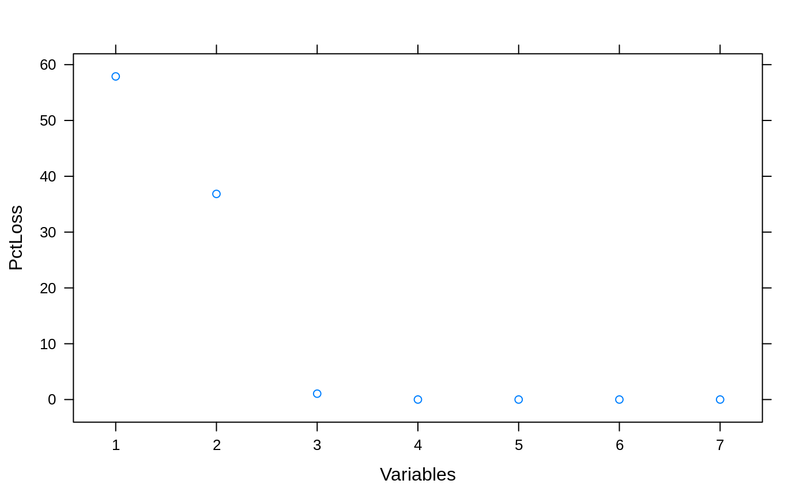

Ancillary functions for backwards selection
pickSizeBest(x, metric, maximize) pickSizeTolerance(x, metric, tol = 1.5, maximize) pickVars(y, size) caretFuncs ldaFuncs treebagFuncs gamFuncs rfFuncs lmFuncs nbFuncs lrFuncs
| x | a matrix or data frame with the performance metric of interest |
|---|---|
| metric | a character string with the name of the performance metric that should be used to choose the appropriate number of variables |
| maximize | a logical; should the metric be maximized? |
| tol | a scalar to denote the acceptable difference in optimal performance (see Details below) |
| y | a list of data frames with variables |
| size | an integer for the number of variables to retain |
An object of class list of length 6.
This page describes the functions that are used in backwards selection (aka
recursive feature elimination). The functions described here are passed to
the algorithm via the functions argument of rfeControl.
See rfeControl for details on how these functions should be
defined.
The 'pick' functions are used to find the appropriate subset size for
different situations. pickBest will find the position associated with
the numerically best value (see the maximize argument to help define
this).
pickSizeTolerance picks the lowest position (i.e. the smallest subset
size) that has no more of an X percent loss in performances. When
maximizing, it calculates (O-X)/O*100, where X is the set of performance
values and O is max(X). This is the percent loss. When X is to be minimized,
it uses (X-O)/O*100 (so that values greater than X have a positive "loss").
The function finds the smallest subset size that has a percent loss less
than tol.
Both of the 'pick' functions assume that the data are sorted from smallest subset size to largest.
## For picking subset sizes: ## Minimize the RMSE example <- data.frame(RMSE = c(1.2, 1.1, 1.05, 1.01, 1.01, 1.03, 1.00), Variables = 1:7) ## Percent Loss in performance (positive) example$PctLoss <- (example$RMSE - min(example$RMSE))/min(example$RMSE)*100 xyplot(RMSE ~ Variables, data= example)xyplot(PctLoss ~ Variables, data= example)absoluteBest <- pickSizeBest(example, metric = "RMSE", maximize = FALSE) within5Pct <- pickSizeTolerance(example, metric = "RMSE", maximize = FALSE) cat("numerically optimal:", example$RMSE[absoluteBest], "RMSE in position", absoluteBest, "\n")#> numerically optimal: 1 RMSE in position 7#> Accepting a 1.5 pct loss: 1.01 RMSE in position 4## Example where we would like to maximize example2 <- data.frame(Rsquared = c(0.4, 0.6, 0.94, 0.95, 0.95, 0.95, 0.95), Variables = 1:7) ## Percent Loss in performance (positive) example2$PctLoss <- (max(example2$Rsquared) - example2$Rsquared)/max(example2$Rsquared)*100 xyplot(Rsquared ~ Variables, data= example2)xyplot(PctLoss ~ Variables, data= example2)absoluteBest2 <- pickSizeBest(example2, metric = "Rsquared", maximize = TRUE) within5Pct2 <- pickSizeTolerance(example2, metric = "Rsquared", maximize = TRUE) cat("numerically optimal:", example2$Rsquared[absoluteBest2], "R^2 in position", absoluteBest2, "\n")#> numerically optimal: 0.95 R^2 in position 4cat("Accepting a 1.5 pct loss:", example2$Rsquared[within5Pct2], "R^2 in position", within5Pct2, "\n")#> Accepting a 1.5 pct loss: 0.94 R^2 in position 3